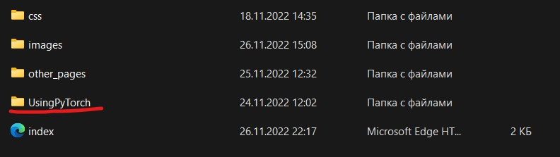
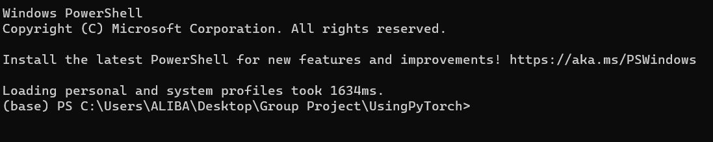
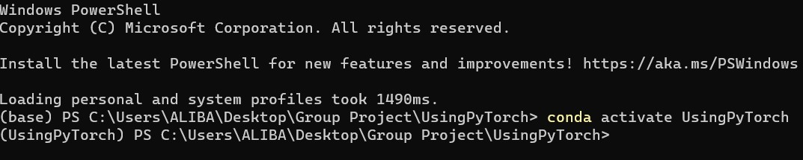
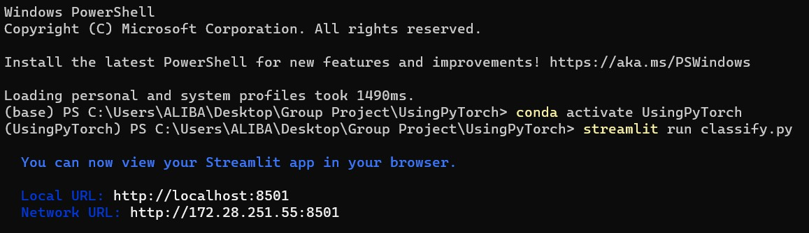
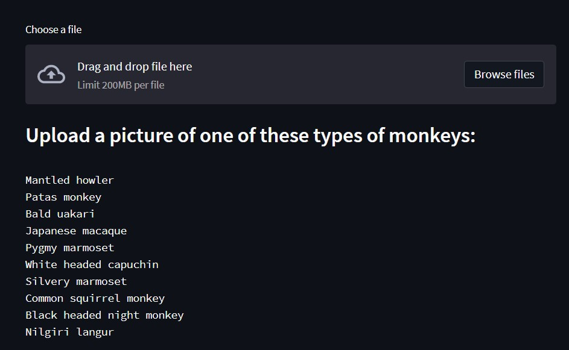
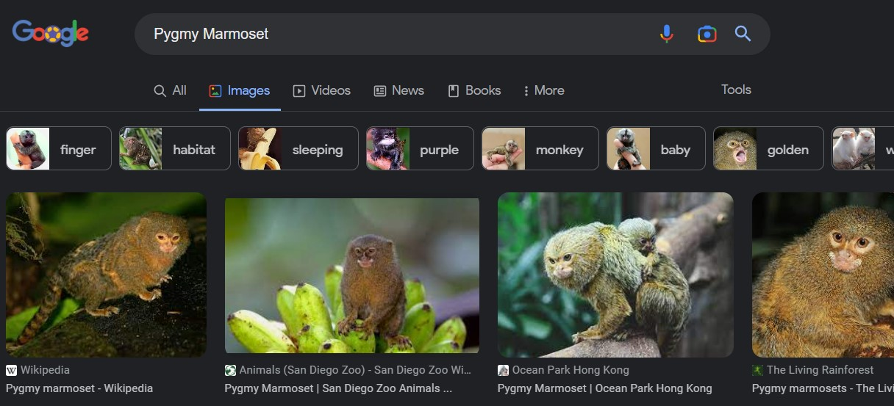
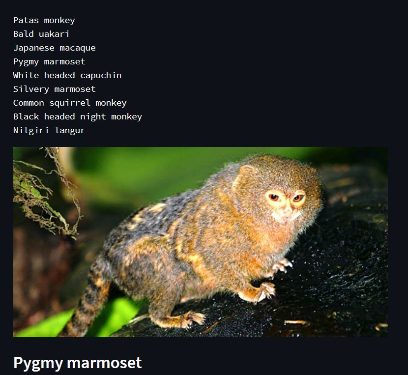

CS1102 Project (2022-2023 Semester A)
Project Group for Lab1_Tue_1600 1
Guide on how to use the final project
In the WebPage folder, open the UsingPyTorch folder.

If python 3.7, conda, and other packages are installed, open the Terminal.

Activate the project environment by the command "conda activate UsingPyTorch".

Run the "streamlit run classify.py command".

Open the given URL in the web browser.

Open a new tab and search for a picture of one of these monkeys:

The WebPage uses the image to recognize the type of monkey.
